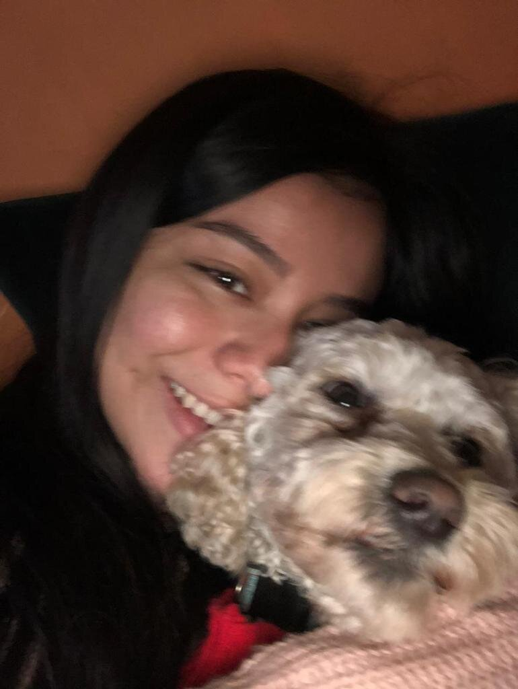
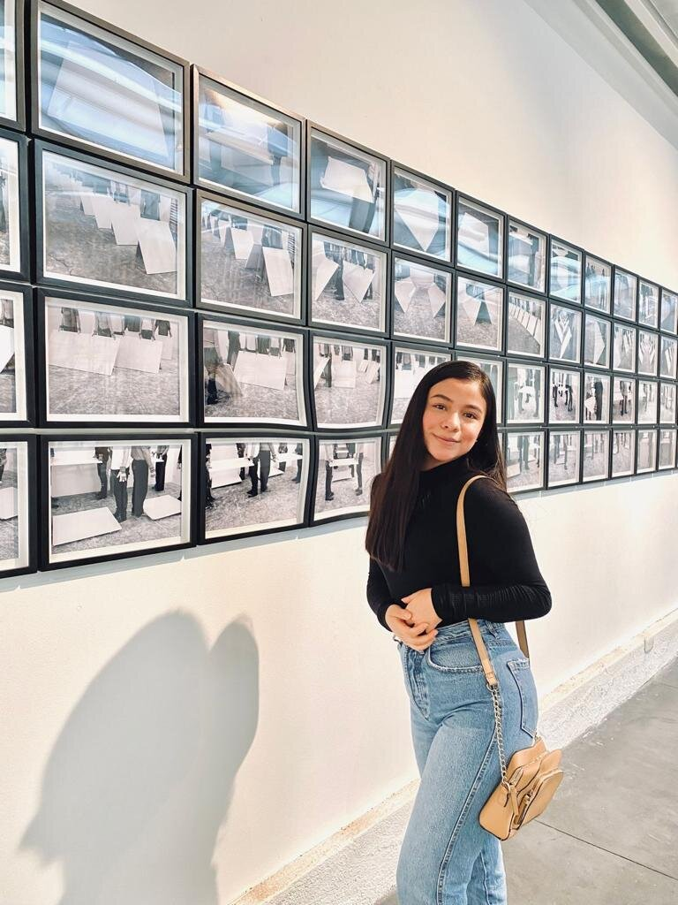

Hola, Mi nombre es Angiee Chavarria, tengo 18 años y los invito a conocer un poco de mi. Soy una persona muy apasaionada por el arte (cualquier tipo), me impresionan las cosas de lo que el ser humano es capaz y me ayuda mucho para encontrar inspiración cuando la necesito. Me gusta mucho la lectura, pasar tiempo en familia y amigos y trato siempre de ser siempre la mejor versión de mi. Mi mayor deseo en la vida es lograr ser una gran doctora. Ha sido mi sueño desde que tengo 8 años ya que me gusta mucho ayudar a los demás especialmente cuando lo necesitan y confio mucho en que voy a lograr mi meta.
Comidas favoritas| Comida | ¿Por qué te gusta? | Primera vez que lo probaste |
|---|---|---|
| Sushi | El sushi me gusta por los sabores que se forman en mi boca. Soy fan de los mariscos y la comida china, y esta es una mezcla perfecta. | Lo probe cuando tenía 8 años. Recuerdo que estaba con mi familia y decidí pedir algo "diferente" para comer... y no me arrepiento. |
| Pastas | La pasta me gusta por la variedad que trae esta comida. Hay muchos tipos de pasta y también muchas maneras de combinar ingredientes como: mariscos, carne, pollo, cerdo o incluso muchos vegetales con los que la pasta queda 10/10. También tengo que decir que es muy fácil de hacer y me gusta probar cosas nuevas. | Lo probe cuando era muy pequeña, no recuerdo muy bien que año pero solo se que mi mamá lo había preparado. Era con carne molida y salsa de tomate. Al primer bocado me encanto su sabor |
| Nombre | Año | Lo que más te gusta hacer |
|---|---|---|
| Luna (French) | 2017 | Sacarla a pasear por las montañas y ver lindos paisajes |
| Cooper (Cocker Spaniel) | 2013 | Jugar a las escondidas con él por toda la casa |
| Zeus (Pastor Aleman) | 2018 | Recostarme en el ya que es muy grande y un poco peludo |
Mi libro favorito se llama "Más alla del invierno" por Isabel Allende. Es mi libro favorito por muchas razones empezando por como esta escrito. La forma en el que la autora estructura la historia y la narrativa para ponerse en el punto de vista de más de tres persojes me gusto mucho que hasta pude llegar a tener una conexión con algunos de ellos. También el mensaje que deja el libro, o la forma en la que yo lo percibí es muy bonito. Habla de como las personas tienen un "invierno" o tienen muchas cosas/problemas pasandoles en sus vidas y a veces solo con ser amable o ayudar a los demás podemos dar un gran impacto. Es un libro que podría re-leer siempre y es un libro que recominedo a todos pero especialmente a jovenes para que lo lean.
Uno de los recuerdos más bonitos, si no es que el más lindo, es uno de los más recientes que fue cuando logre entrar a la universidad. Como he dicho mi mayor sueño es ser doctora, y siempre me he esforzado para lograrlo. He estado en cirujías y ayudado a doctores y me a ayudado a estar segura para lo que quiero en mi fururo. Recuerdo que cuando hice mis examenes estaba muy nerviosa y ansiosa por saber los resultados y cuando recibí el correo diciendo que entre a la USAC fue el momento más feliz de mi vida.
